1목록·표형
좌측 메뉴 + 표
건이 많아 표로 훑는 회사에 맞는다. 검색·정렬·한눈에 세기가 중심일 때.
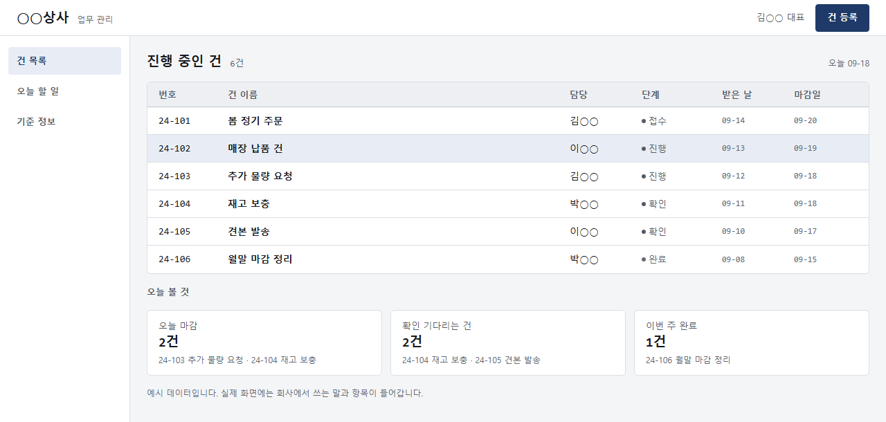
목록·표형 · 남색
건이 많고 표로 훑는 회사 — 남색은 차분하고 격식 있는 인상. 숫자가 또렷하게 읽힌다.
list-navy
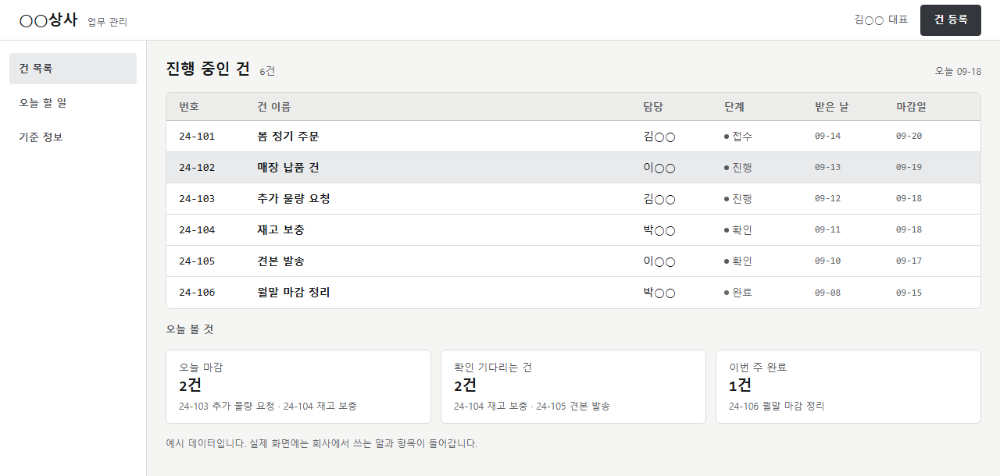
목록·표형 · 진회색(차콜)
건이 많고 표로 훑는 회사 — 진회색은 색을 거의 쓰지 않은 담백한 인상. 글자와 숫자가 앞에 선다.
list-charcoal
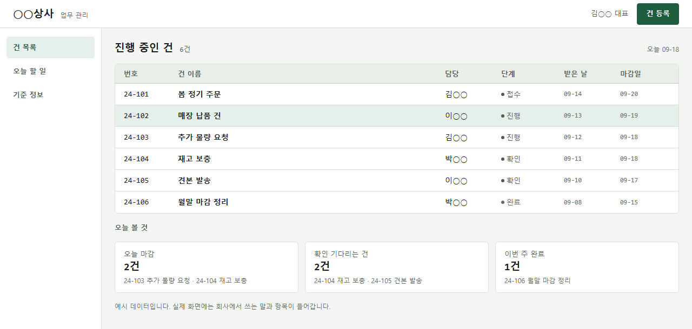
목록·표형 · 녹색
건이 많고 표로 훑는 회사 — 녹색은 부드럽고 정돈된 인상. 표가 조금 편안해 보인다.
list-green
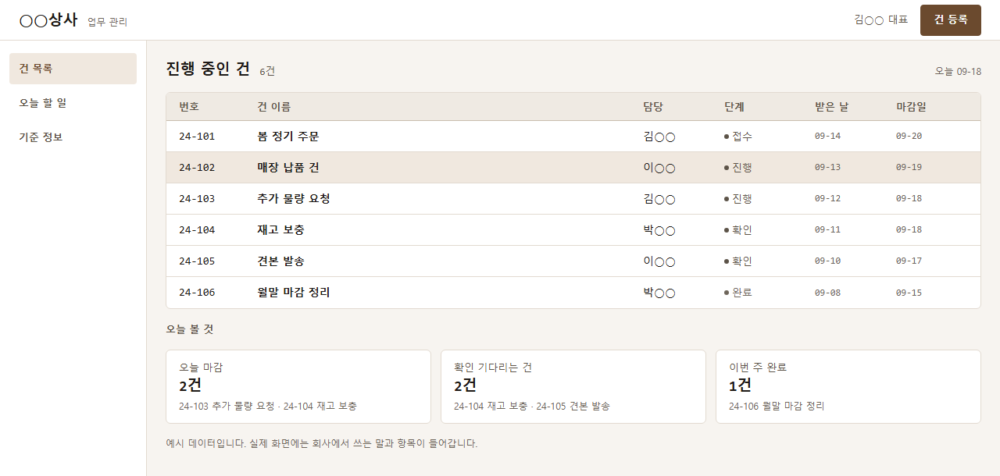
목록·표형 · 갈색
건이 많고 표로 훑는 회사 — 갈색은 따뜻하고 순한 인상. 표가 딱딱해 보이지 않는다.
list-brown
2진행 보드형
상단 탭 + 단계 열
지금 어느 단계까지 왔는지가 중요한 회사에 맞는다. 단계별로 밀어 가는 일.
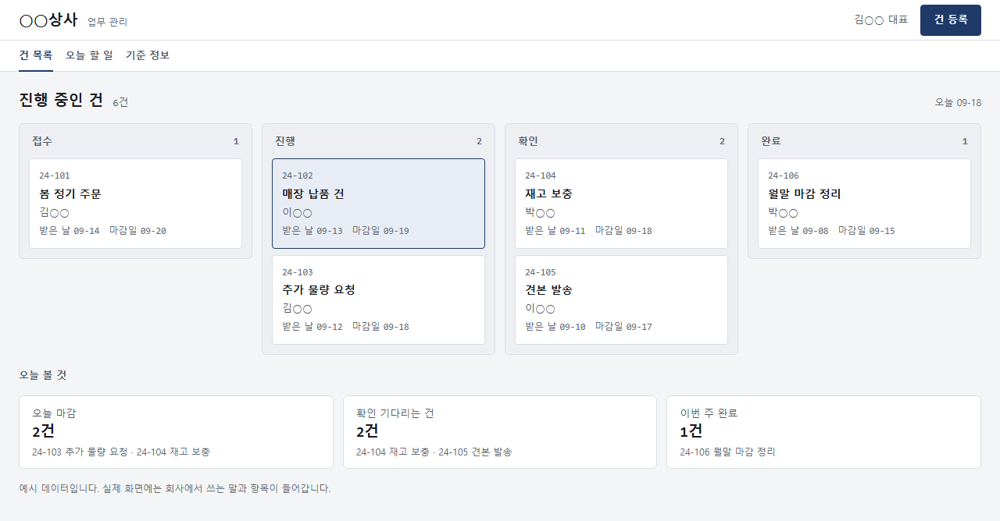
진행 보드형 · 남색
단계별로 밀어 가는 일 — 남색은 차분하고 격식 있는 인상. 회의 화면에 어울린다.
board-navy
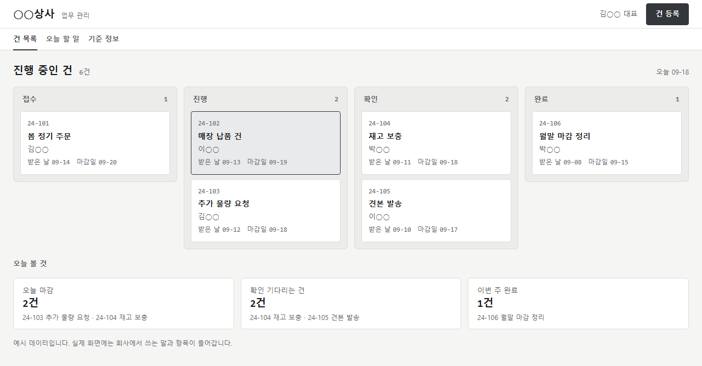
진행 보드형 · 진회색(차콜)
단계별로 밀어 가는 일 — 진회색은 담백한 인상. 카드가 늘어도 화면이 차분하다.
board-charcoal
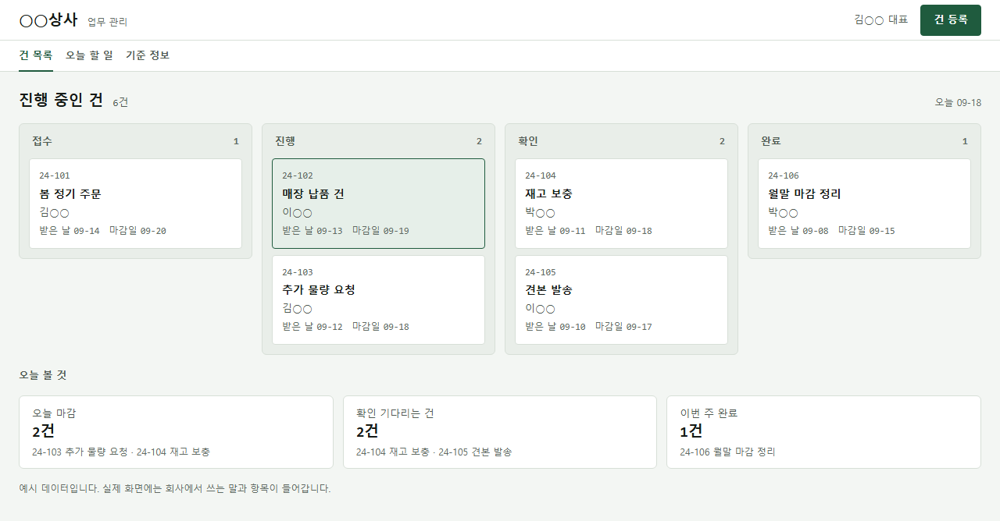
진행 보드형 · 녹색
단계별로 밀어 가는 일 — 녹색은 부드럽고 정돈된 인상. 진행과 완료가 순하게 보인다.
board-green
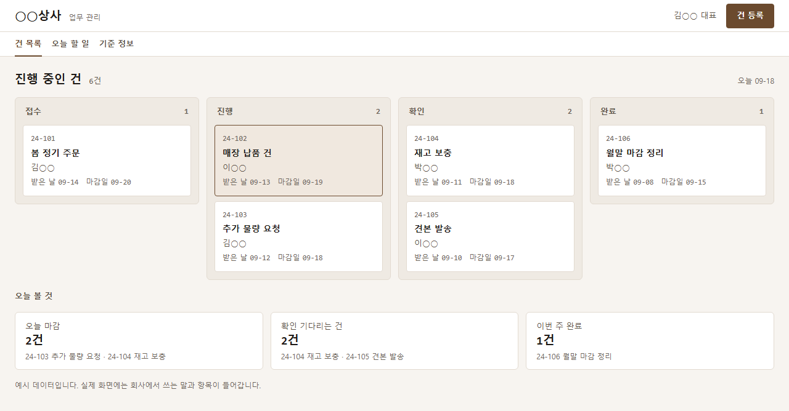
진행 보드형 · 갈색
단계별로 밀어 가는 일 — 갈색은 따뜻하고 순한 인상. 함께 보는 화면이 무겁지 않다.
board-brown
3카드·상세형
카드 목록 + 상세 패널
건 하나하나를 자세히 보는 회사에 맞는다. 고객이 직접 보는 화면에 적합하다.
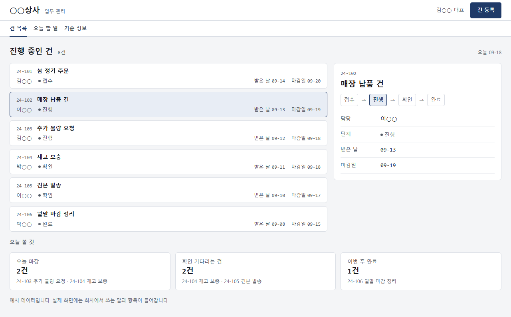
카드·상세형 · 남색
건 하나를 자세히 보는 회사 — 남색은 차분하고 격식 있는 인상. 안내 화면이 단정하다.
card-navy
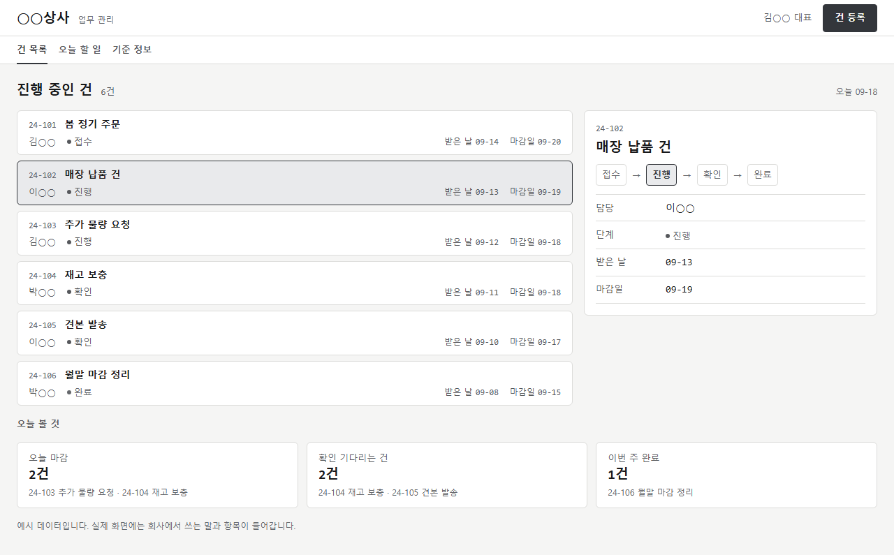
카드·상세형 · 진회색(차콜)
건 하나를 자세히 보는 회사 — 진회색은 담백한 인상. 사진·서류가 주인공일 때.
card-charcoal
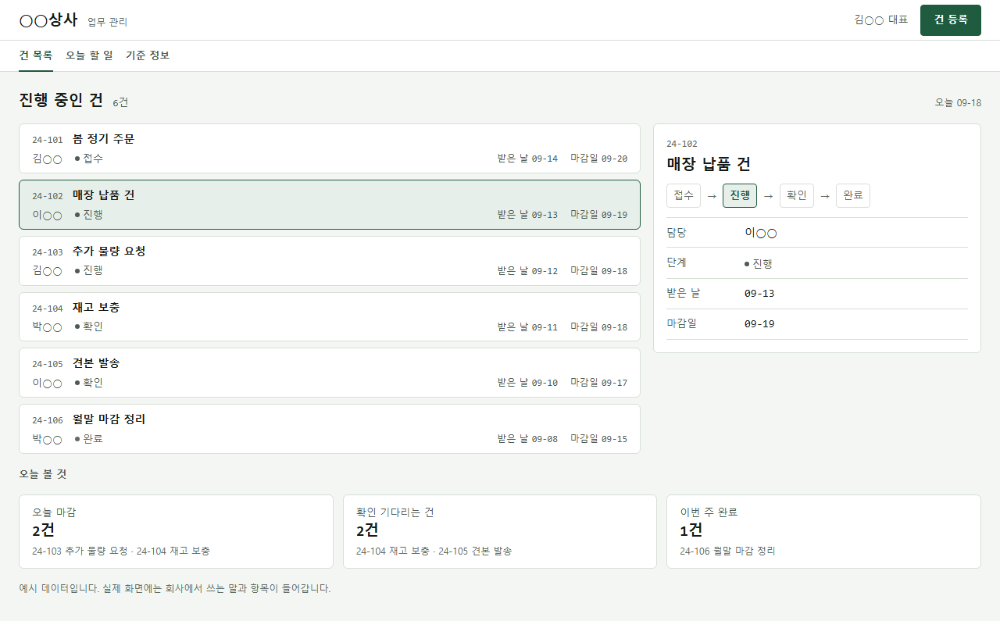
카드·상세형 · 녹색
건 하나를 자세히 보는 회사 — 녹색은 부드럽고 정돈된 인상. 진행 안내가 순하게 읽힌다.
card-green
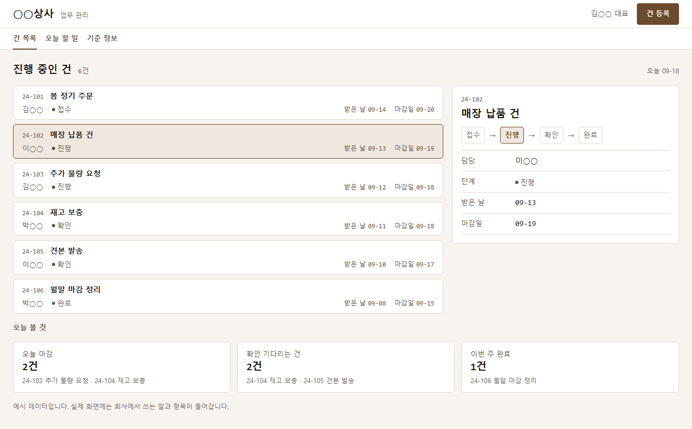
카드·상세형 · 갈색
건 하나를 자세히 보는 회사 — 갈색은 따뜻하고 순한 인상. 고객에게 보여 주는 화면을 부드럽게.
card-brown